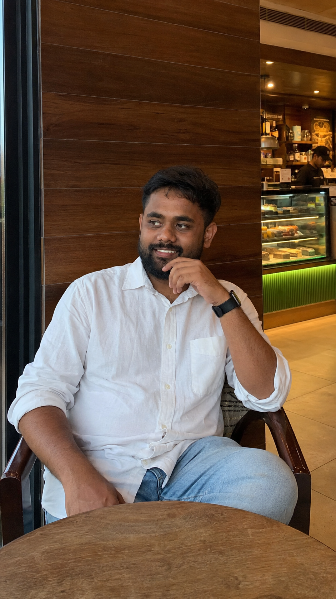

Aditya Yadav
I'm an MTech student in Artificial Intelligence, in the Department of Computer Science and Engineering at IIT Jodhpur. I work in the CLARITY Lab, advised by Dr. Hardik Jain, where my research is on hardware-aware neural architecture search for stereo depth estimation in visual SLAM — making 3D perception fast enough to run on embedded hardware like the Jetson Orin Nano without giving up accuracy.

I'm interested in efficient deep learning, neural architecture search, and 3D vision — specifically how to make stereo depth estimation and visual SLAM systems run in real time on power- and memory-constrained edge hardware.
A progressive-shrinking elastic supernet paired with NSGA-II multi-objective search discovers stereo-depth architectures that trade off accuracy, latency, and memory footprint. Targets deployment on a Jetson Orin Nano 8GB with TensorRT, integrated into ORB-SLAM3 and evaluated on the KITTI and EuRoC benchmarks.
A GPU-accelerated implementation of ORB-SLAM3 for the Jetson Orin Nano that preserves tracking accuracy while substantially improving throughput, aimed at making visual SLAM practical on power-constrained robotics hardware.
A few other things I've built alongside coursework and research.
A production-grade RAG research assistant, built with a full MLOps pipeline for reproducible deployment.